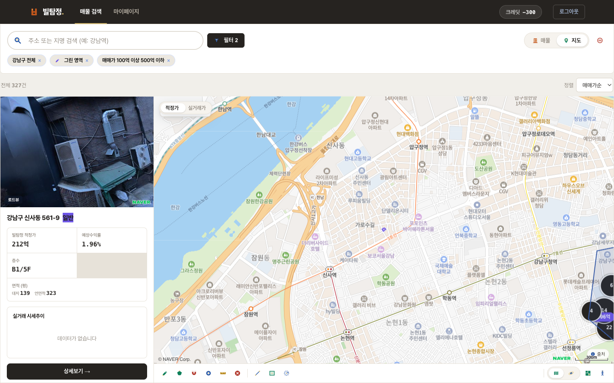
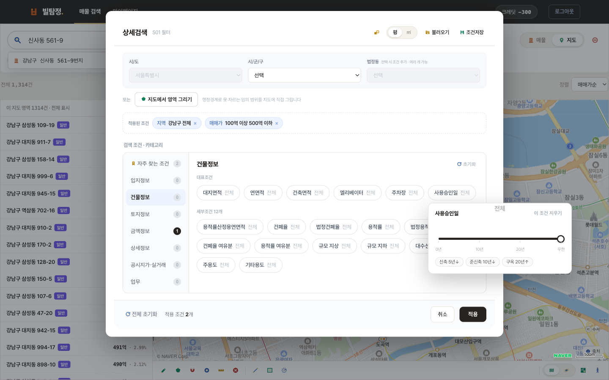
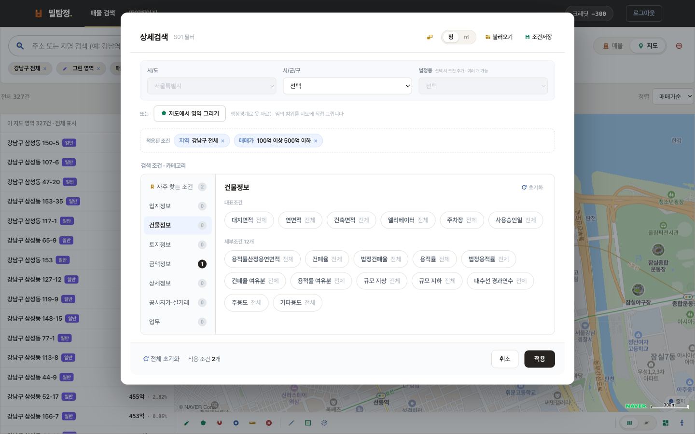
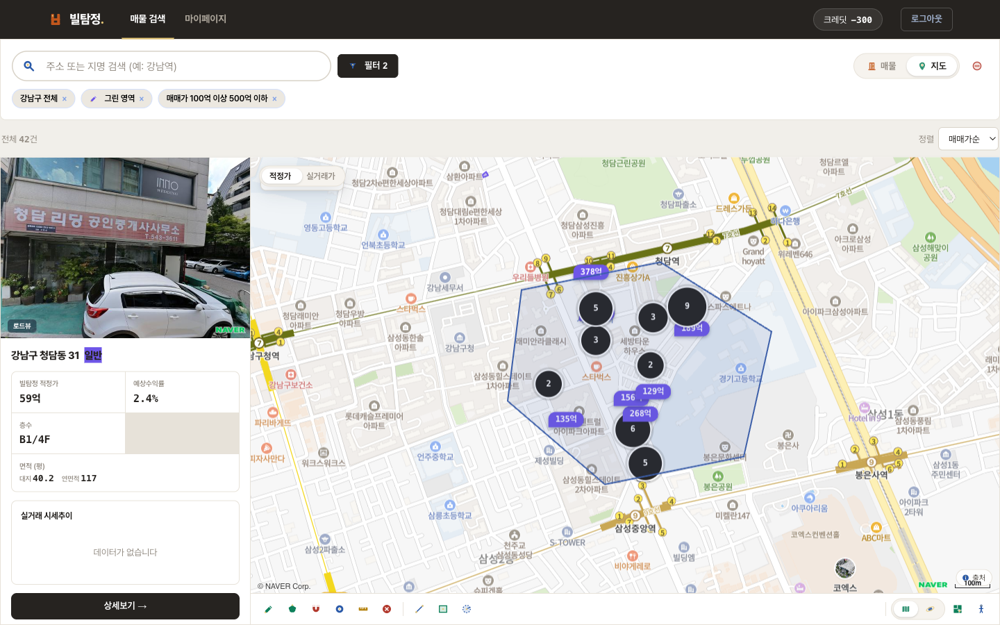
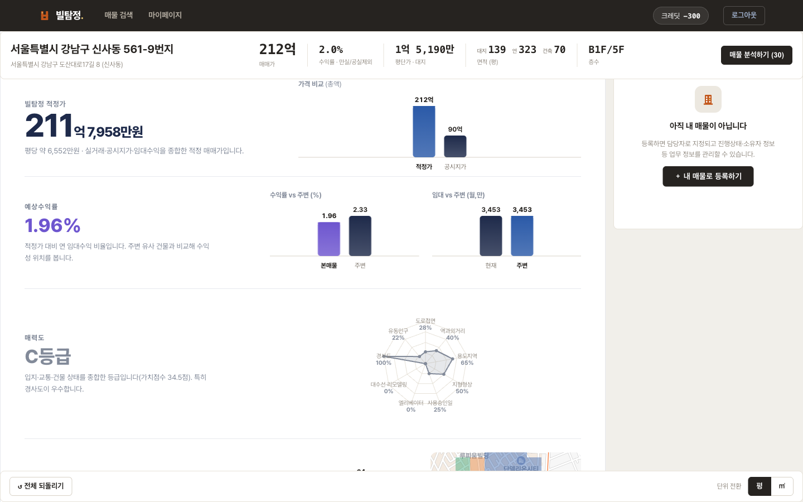
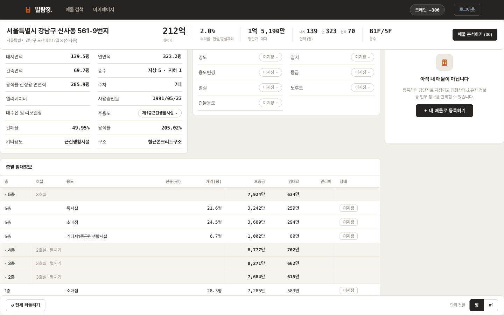
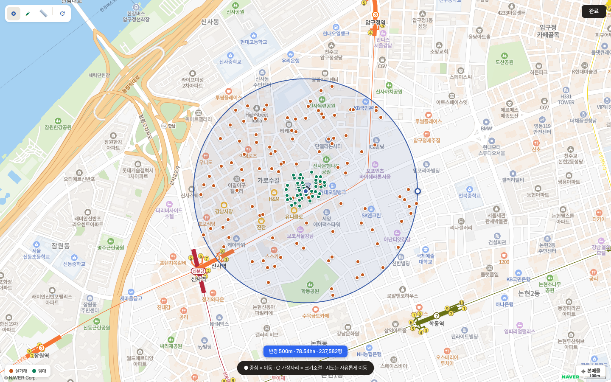
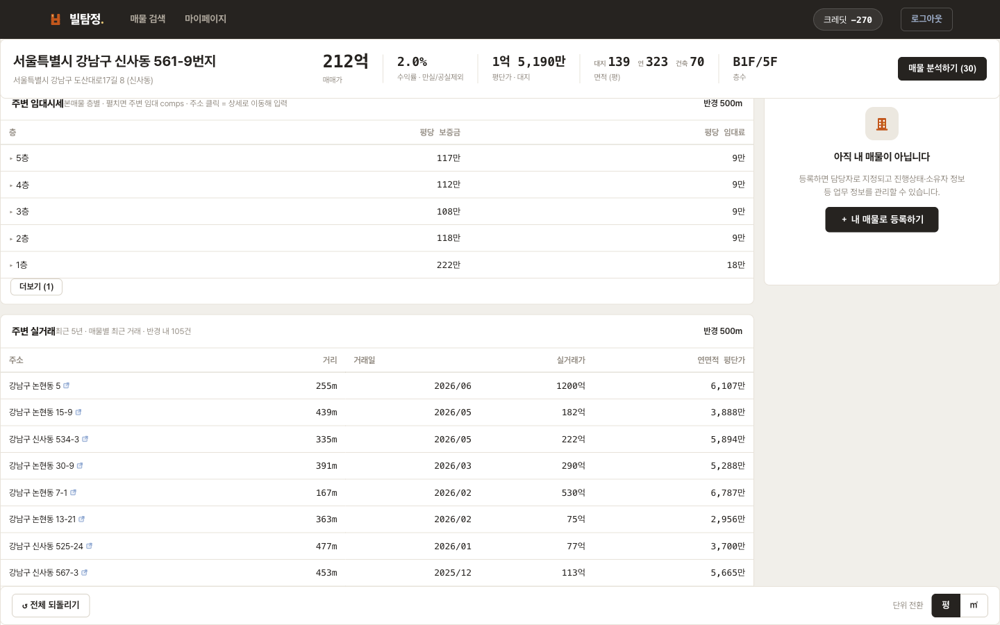
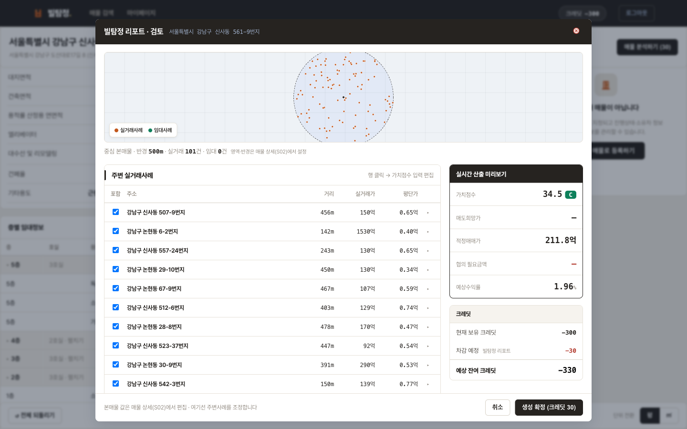
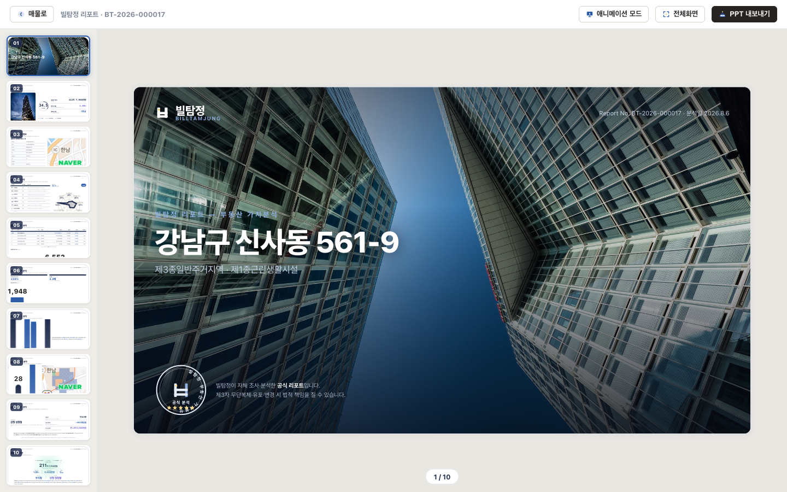

123① 검색어 입력 ② 요약 카드 ③ 상세보기
거리재기 · 면적 · 반경 · 지적도(필지 경계) · 로드뷰 · 위성 — 검색과 무관하게 언제든 사용합니다.

123456화면의 번호가 아래 순서와 같습니다.

1234① 카테고리 목록 ② 대표조건(자주 쓰는 것) ③ 세부조건 ④ 지도에서 영역 그리기
| 카테고리 | 주요 조건 |
|---|---|
| 자주 찾는 조건 | 대표 조건만 모아둔 화면 — 여기서 대부분 해결됩니다 |
| 입지정보 | 역과의 거리 · 유동인구 |
| 건물정보 | 대지/연면적/건축면적 · 엘리베이터 · 주차 · 사용승인일 · 건폐율/용적률 · 여유분 · 규모(지상/지하) · 대수선 경과연수 · 주용도 |
| 토지정보 | 토지면적 · 지목 · 토지이용상황 · 지형형상 · 도로접면 · 지세 |
| 금액정보 | 매매가 · 수익률(만실/공실제외) · 평단가(대지·연면적) · 총보증금/임대료/관리비 · 공실 |
| 상세정보 | 건물용도(수익형·신축용·사옥용·리모델링용) · 등급 · 입지 · 명도 · 용도변경 · 멸실 |
| 공시지가·실거래 | 공시지가와 5·10년 상승률 · 공시지가/매매가 비율 · 실거래가 · 실거래일 · 거래 횟수 |
| 업무 | 진행상태 · 담당자 · 긴급도 · 소유자타입 · 매물번호 · 접수일 (팀이 입력한 정보) |
| 용적률 여유분 | 법정 용적률 − 현재 용적률. 증축·신축 여지가 남은 건물을 찾을 때(예: 여유 100%p 이상) |
| 공시지가/매매가 | 이 비율이 높으면 땅값 대비 저평가 신호로 볼 수 있습니다 |
| 실거래일 | 10년↑ 미거래로 걸면 오랫동안 손바뀜이 없던 건물이 나옵니다 |
| 대수선 경과연수 | 리모델링한 지 얼마나 됐는지 — 노후 건물 중 관리된 물건 선별 |
대로 하나를 사이에 둔 두 블록, 역세권 안쪽만 — 행정동으로 자를 수 없는 범위를 직접 그립니다. 그린 영역은 지역 선택을 대체하며 다른 조건과 함께 적용됩니다.

123① 그리기 도구 줄 ② 그린 영역 ③ 「그린 영역」 칩 — 결과는 그 안쪽만 남습니다.
| 도구 | 사용법 |
|---|---|
| 자유곡선 | 지도를 누른 채 드래그해 원하는 모양을 그립니다. 손을 떼면 그 궤적이 영역이 됩니다. 이어 그리면 영역이 확장됩니다. |
| 다각형 | 꼭짓점을 하나씩 클릭하고 마지막에 더블클릭으로 닫습니다. 직선 경계를 정확히 잡을 때. |
| 자석 올가미 | 대충 그리면 필지 경계에 자동으로 달라붙습니다. 블록 단위로 정확히 자를 때 가장 편합니다. |
| 원 반경 | 중심을 누르고 바깥으로 드래그하면 원이 그려집니다. "이 지점에서 300m" 같은 범위. |
| 자 | 직선 가이드 — 그릴 때 자 가장자리에 대면 선이 반듯하게 붙습니다. |

12345① 적정가 ② 가격 비교 ③ 예상수익률 ④ 매력도 ⑤ 리포트 만들기
상단 표시 범위에서 리포트 요약 전체 매물 건물·토지를 골라 필요한 만큼만 봅니다.
| 지표 | 의미 |
|---|---|
| ① 적정가 | 주변 실거래를 토지·건물 가치로 나눠 비교하고 연식·시점·규모를 보정한 값. 상업·업무용만 산출 |
| ② 가격 비교 | 적정가 · 실거래 · 공시지가 총액을 나란히 |
| ③ 예상수익률 | 연 임대수익 ÷ 매매가. 주변 평균과 비교 |
| ④ 매력도 | S~D 등급 + 8축 레이더(도로접면·역거리·용도지역 등) |
| 아래로 계속 | 투자 유형(신축용·리모델링용·수익형) · 미래가치 · 상권 지도 |

1234① 층 클릭 → 호실 펼침 ② 호실별 면적 ③ 보증금·임대료 입력 ④ 상태(공실 지정)
적정가와 주변시세는 "주변"의 범위로 달라집니다. 기본은 반경 500m이며, 직접 그리면 그 범위로 다시 계산됩니다. 설정은 팀 전체에 공유되고 이후 만드는 리포트에도 적용됩니다.

1234① 중심 점 = 위치 이동 ② 가장자리 = 반경 조절 ③ 반경·면적 실시간 표시 ④ 완료

| 주변 임대시세 | 범위 안 건물들의 층별 평당 보증금·임대료 평균. 본 매물의 층 구성에 맞춰 표시됩니다. |
| 주변 실거래 | 최근 5년, 매물별 최근 거래. 거리·거래일·실거래가·연면적 평단가. 주소 클릭 시 그 건물 상세로 이동. |
생성 전에 근거 사례를 직접 검토합니다. 여기서 조정한 내용이 리포트의 적정가에 그대로 반영됩니다.

1234① 사례 목록(체크 해제 = 제외) ② 행 클릭 → 그 사례 정보 편집 ③ 실시간 적정가·수익률 ④ 생성 확정

왼쪽 썸네일로 페이지 이동, 좌우 방향키로도 넘길 수 있습니다.
| 구성 (10장) | 내용 |
|---|---|
| 표지 · 핵심 요약 | 사진과 리포트 번호, 적정가·수익률·등급 요약 |
| 기본정보 · 매력도 | 대장 정보와 위치, 8축 가치점수 |
| 가격분석 · 근거 사례 | 적정가 산출 과정과 실제로 쓰인 주변 거래 목록 |
| 공시지가 · 임대현황 | 공시지가 흐름, 층별 임대 구성 |
| 수익률 · 투자유형 · 미래가치 | 수익성 위치, 활용 방향, 상승 잠재력 |
| 기능 | 설명 |
|---|---|
| 애니메이션 모드 | 발표용 — 요소가 순서대로 나타납니다 |
| 전체화면 | 미팅 화면 공유용 |
| 보관 | 마이페이지 › 내 산출물에 계속 남습니다 |